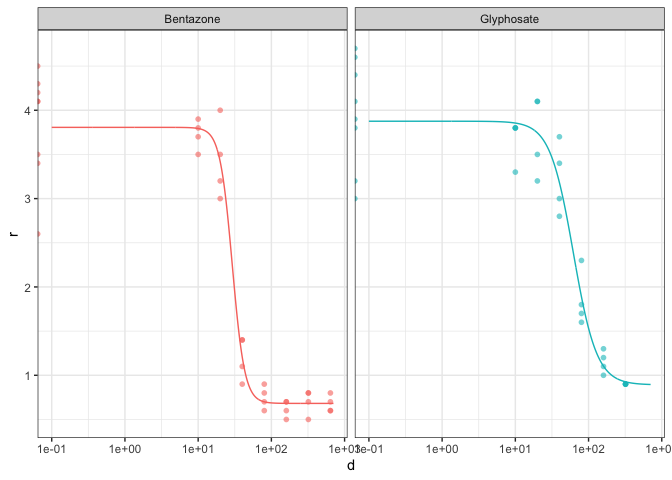

The goal of {tidydrc} is to create a programmatic, ‘tidy’ interface to the {drc} package for fitting various dose-response models to large amounts of experimental data.
This package leverages the tidyr::nest() and purrr::map() workflow for keeping raw data, fitted models, predictions, and relevant model coefficients together in a single data frame.
With a single function, we fit a LL.4() 4 parameter log-logistic dose-response model do the example data S.alba.
library(tidydrc)
#> Loading required package: drc
#> Loading required package: MASS
#>
#> 'drc' has been loaded.
#> Please cite R and 'drc' if used for a publication,
#> for references type 'citation()' and 'citation('drc')'.
#>
#> Attaching package: 'drc'
#> The following objects are masked from 'package:stats':
#>
#> gaussian, getInitial
str(S.alba)
#> 'data.frame': 68 obs. of 3 variables:
#> $ Dose : int 0 0 0 0 0 0 0 0 10 10 ...
#> $ Herbicide: Factor w/ 2 levels "Bentazone","Glyphosate": 2 2 2 2 2 2 2 2 2 2 ...
#> $ DryMatter: num 4.7 4.6 4.1 4.4 3.2 3 3.8 3.9 3.8 3.8 ...S.alba is data from two Herbicide treatments, and contains Dose info as well as the response to the Dose (DryMatter),
Into the tidydrc_mode() function we supply the data frame, dose and response columns, the model we wish to fit (defaults to LL.4()) and and columns we wish to group by – in this case the Herbicide treatment.
fitted <- tidydrc_model(
data = S.alba,
dose = Dose,
response = DryMatter,
model = LL.4(),
Herbicide
)
fitted
#> # A tibble: 2 × 6
#> # Groups: Herbicide [2]
#> Herbicide data drmod resid pred coefs
#> <fct> <list> <list> <list> <list> <list>
#> 1 Glyphosate <tibble [32 × 4]> <drc> <df [32 × 2]> <df [680 × 5]> <tibble [4 ×…
#> 2 Bentazone <tibble [36 × 4]> <drc> <df [36 × 2]> <df [680 × 5]> <tibble [4 ×…The result of the tidydrc_model() function is a tibble that has a row for each group. Each column is a nested object. Associated with each group we have the data, the fitted drmod model, the model residuals resid, the fitted curve data in pred and the coefficients from the model in coefs.
The user can use tidyr::unnest() to access relevant information and create plots and tables for reporting. The convenience function tidydrc_plot() is provided for quickly plotting the results. The result can then me modified like any other {ggplot2} plot such as ggplot2::facet_wrap() .
fitted %>%
tidydrc_plot(
ed50 = FALSE,
confint = FALSE,
colour = ~Herbicide
) +
ggplot2::facet_wrap(~Herbicide) +
ggplot2::theme(legend.position = "")
#> Warning: Transformation introduced infinite values in continuous x-axis